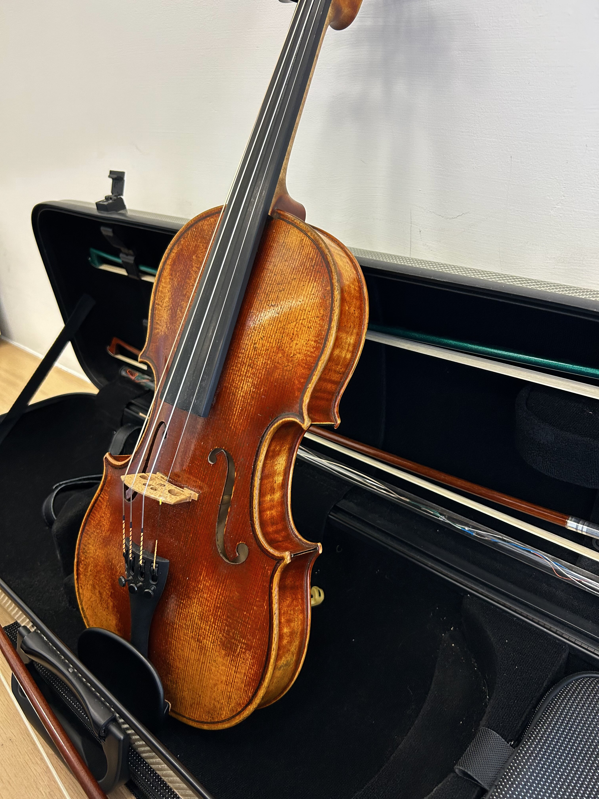
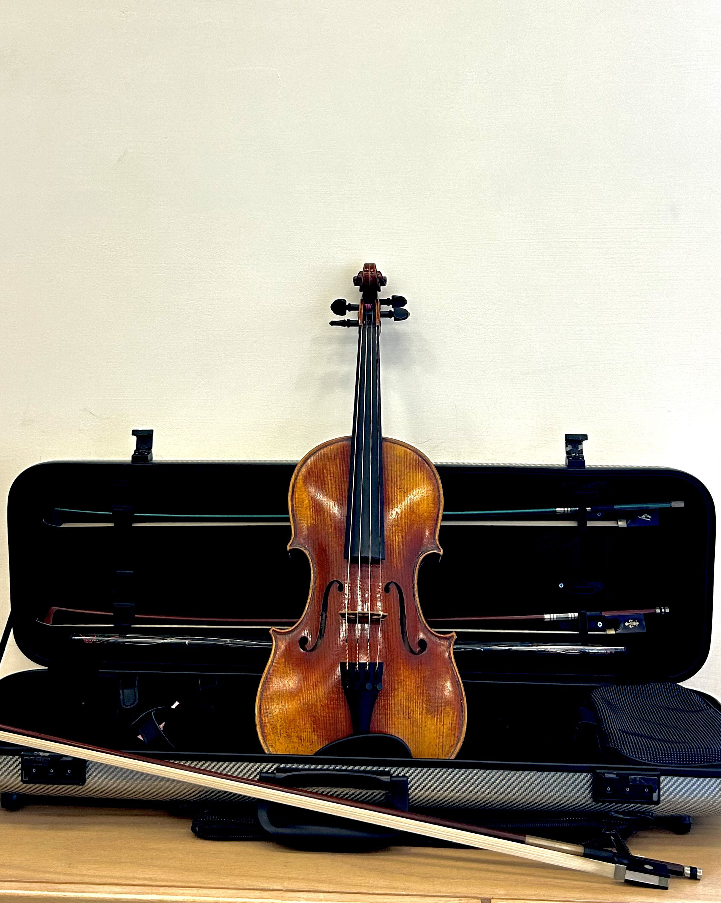
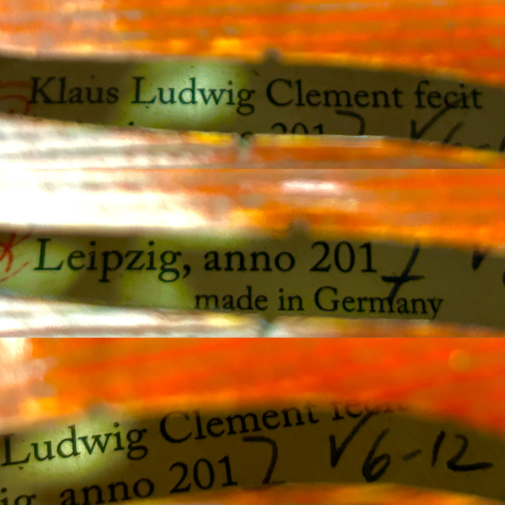

Leipzig
Violin
Made by Klaus Ludwig Clement in Germany in the year of 2017. The luthier made a series of violin from levels V6 to 12. This is the highest level for the series (the violin is a V12). The wood is made purposefully to look older in age therefore called an archaized violin. The “texture” of the violin looks like it has been around for centuries through multiple techniques by the luthier Klaus Ludwig Clement.